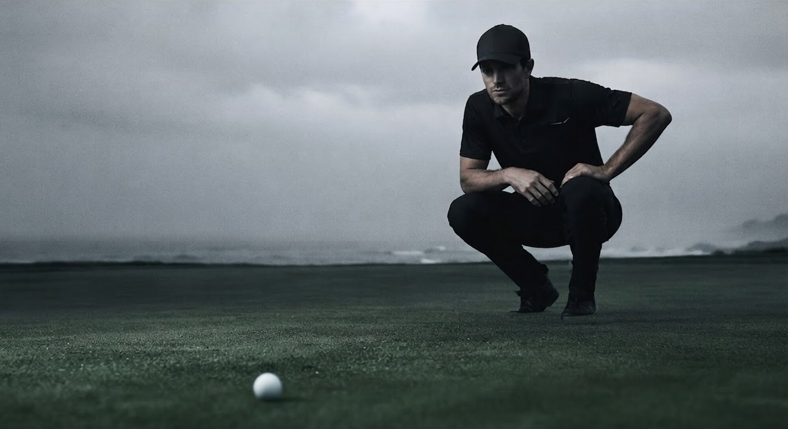
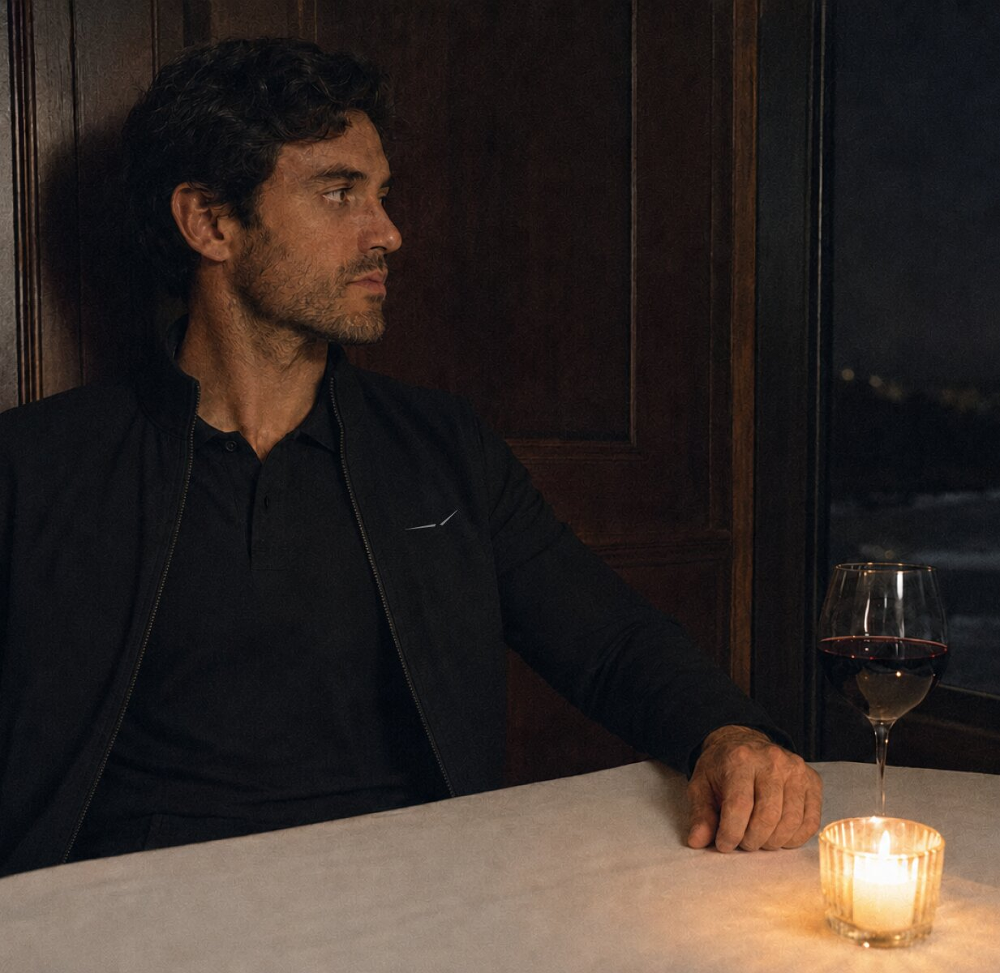

Field Notes / 001
The conditions are the course.
Cold light. Hard coastlines. The work begins before the first tee.
The impossible game
Played anyway.
Nobody has mastered golf. Not for a season, not for a round, mostly not even for a hole. Penrose is built for the players who understand this completely—and return in silence, prepared.

Weather / West
The forecast is not an interruption.

Everything after
The round ends. The evening does not.
What you wore at the turn should be welcome at the table—and should never have to explain itself in either place.
View Release 01
After / 18
Considered beyond the course.
Technical performance resolves into a clean silhouette, a quiet surface, and one mark seen only at close range.
Private release